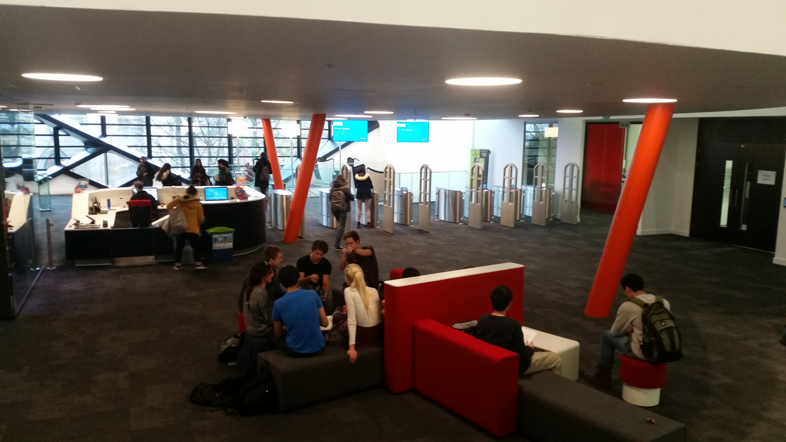
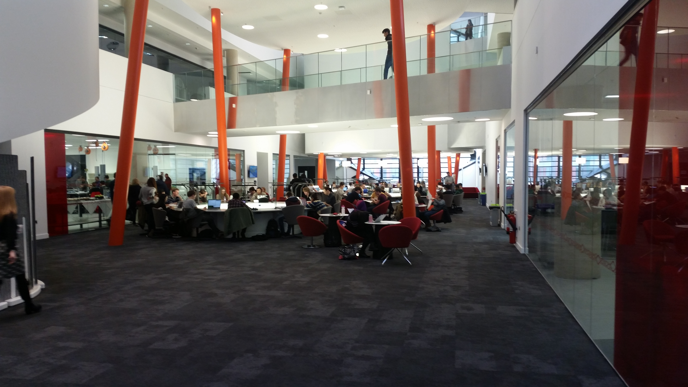

The Diamond

The Diamond is Sheffield's newest campus building. It was opened in September 2015 with the aim to provide labs, study spaces and lecture theatres to the Engineering Faculty's students, and hence has become known as the Engineering building.
Ground Floor and Basement
The building itself is accessible to all students and staff of the University of Sheffield, even though only the Engineering-related courses hold lectures there. As my course is part of the Engineering faculty, this is where I have my lectures and spend most of my time working at. The ground floor includes a cafeteria space and stairs which lead either to the basement level to the lecture theatres, or upstairs to Floors 1-4 where all the labs and study spaces are.
{kind=link}
Upper floors
The upper floors are only accessible to students and staff due to barriers on Floor 1 which require a Ucard to pass through.
Labs
{kind=link}
Floor 1 largely consists of an open study area with plenty of seating areas
and tables to work at. A number of Biology labs are also present on Floor 1
for the Biology and Chemistry departments.
 "Danger Lab" sessions, which demonstrate precautions to be taken while
working, are also held in these labs for students of all Engineering
courses, Computer Science included. Computer Rooms are present on the
second floor in which all of my lab sessions for my course take place.
"Danger Lab" sessions, which demonstrate precautions to be taken while
working, are also held in these labs for students of all Engineering
courses, Computer Science included. Computer Rooms are present on the
second floor in which all of my lab sessions for my course take place.
{kind=link}
Silent Study and Group Meeting Rooms
Silent Study areas and group meeting rooms are available on the third and fourth floors. Group meeting rooms can be booked by any member of the university in advance.
In addition, a reception for the IT Help Service is available on the fourth floor, from which equipment such as laptops can be borrowed for use.